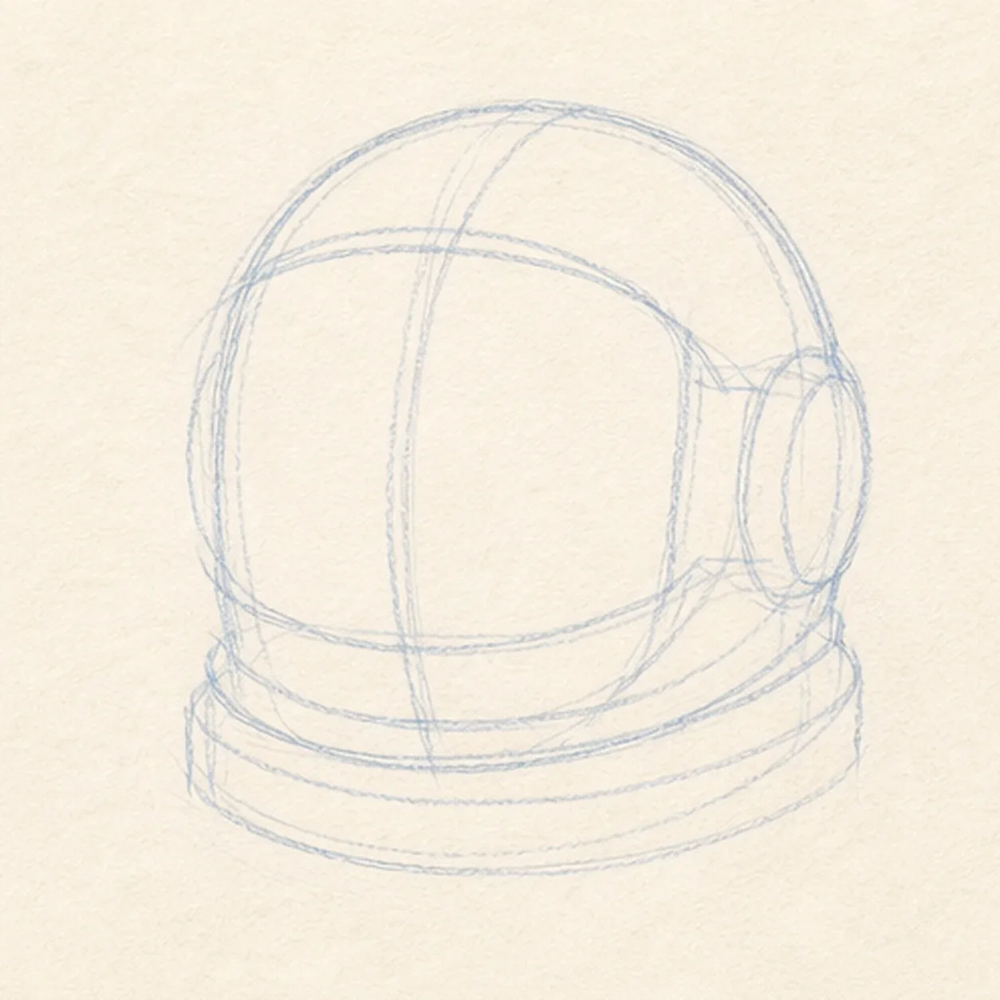
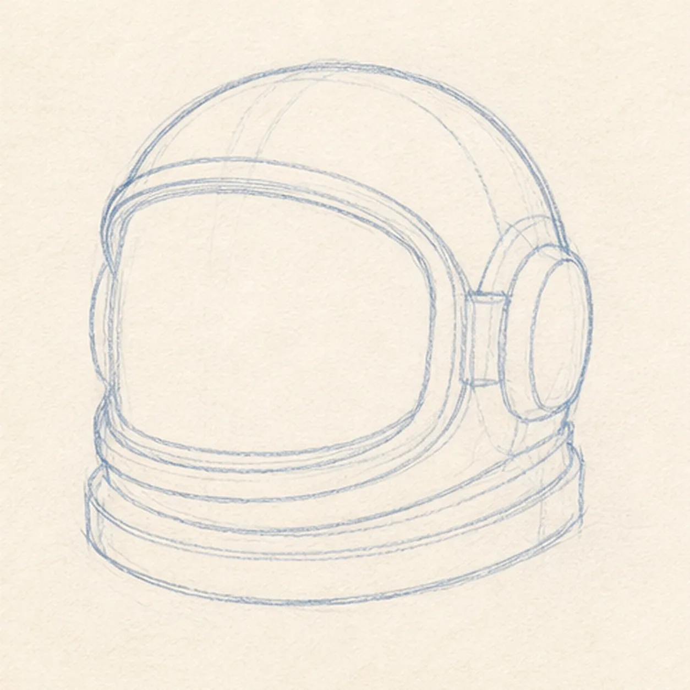
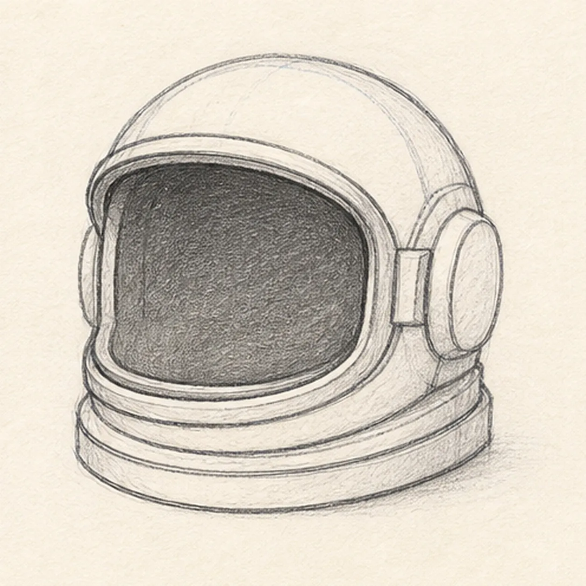
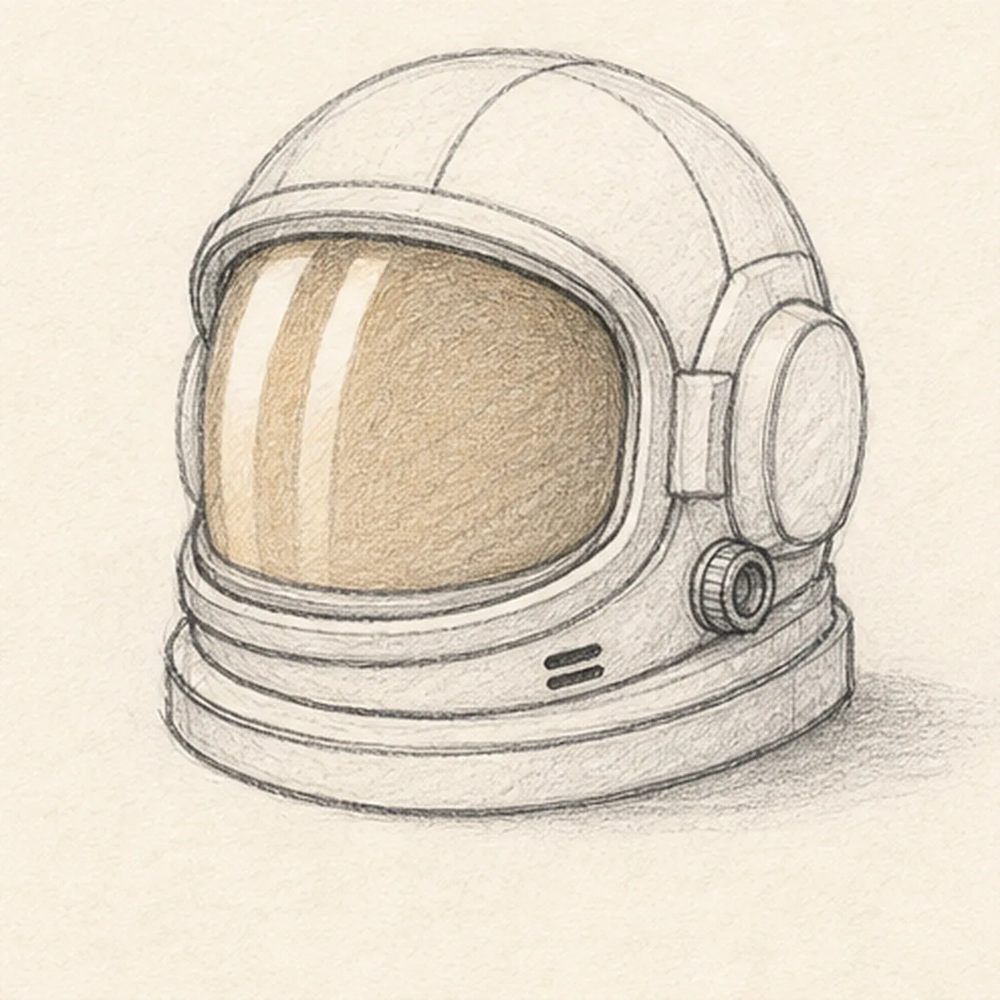
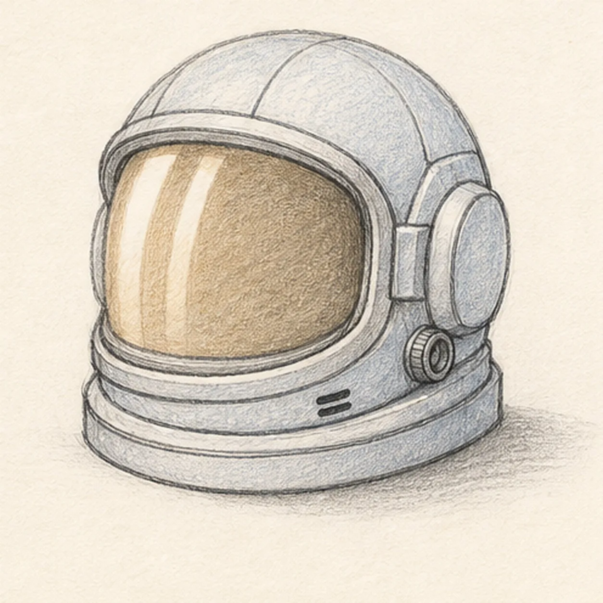

From the archive
Let's draw an astronaut helmet
Treat this as one small practice round: build the subject lightly, notice the shapes, then darken only the lines that help the finished sketch.
-
01

Block in the helmet
Draw a light rounded shell, reserve a broad visor opening, add a vertical center axis and side planes, then place the lower neck-ring footprint.
Sketch tip: Ghost the shell curve before touching down and compare the paper spaces on both sides of the visor reserve. Keep the visor footprint blank instead of finishing shell detail that it will cover.
-
02

Shape the outer shell
Wrap the guides with the rounded helmet shell, visor brow, side housings, and layered neck ring while preserving the same three-quarter turn.
Sketch tip: Rotate the page for the long shell arc and draw it in one relaxed pass. Check that the neck ring stays centered beneath the visor rather than drifting toward the larger side housing.
-
03

Build the visor and collar
Add the broad dark visor opening, raised rim, lower seal, and layered neck collar inside the reserved construction footprints.
Sketch tip: Pull the visor curve parallel to the outer brow, then squint at the opening to check that its left and right corners feel related. Leave the helmet empty—no face is needed.
-
04

Add the helmet hardware
Place the panel seams, one side connector, exactly two small vents, two broad visor highlight bands, a light amber visor tint, and a shallow ground shadow.
Sketch tip: Draw the two highlight bands as curved strips that follow the visor rather than straight white bars. Keep the connector and vents small so the shell remains the dominant form.
-
05

Shade the space helmet
Add pale blue-gray pencil to the established shell, deepen the visor and collar with soft graphite, and blend the existing visor tint and ground shadow.
Sketch tip: Use the side of the pencil for the broad shell planes and leave scattered paper tooth showing. Build the visor value in two light passes so the white reflections stay crisp.
-
06

Finish the helmet study
Strengthen the keeper contours and clarify the established shell, visor, collar, hardware, reflections, restrained color, and shadow.
Sketch tip: Trace the visor rim with your eyes once to make sure its thickness stays even, then stop. A face, suit, flag, stars, planet, or spacecraft would turn this focused object study into a different lesson.